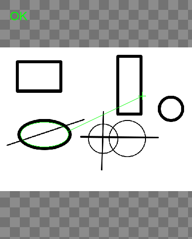
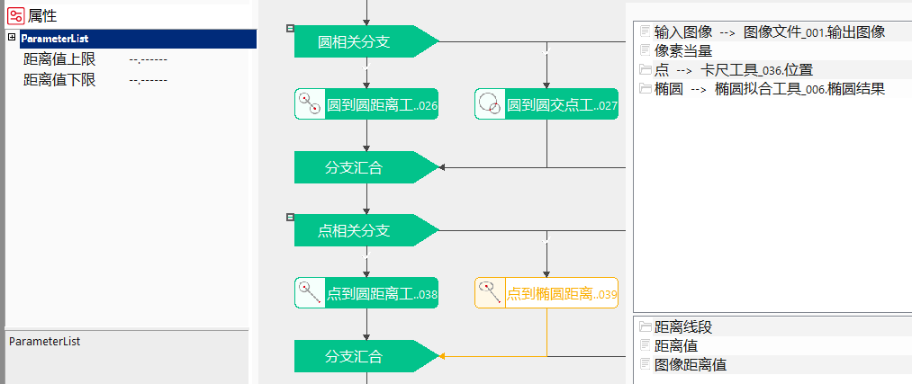
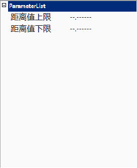
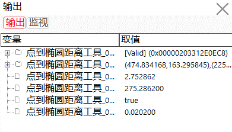

点到椭圆距离工具的主要作用是计算图像上一个点到一个椭圆的垂直距离，并将图像上的距离换算成实际的距离。

点到椭圆距离工具适用于特征点到类圆形目标物体的距离测量。
距离计算
点到椭圆边缘的最短距离。
如果点在椭圆外部，距离值为正；
如果点在椭圆边缘上，距离值为零；
如果点在椭圆内部，距离值为负。


距离值上限、距离值下限
对于输出参数距离值的有效范围进行设定，距离值上限、距离值下限的可取值范围为[-999999.999999, 999999.999999]，另可设置为"–.——“,表示对距离值上限或下限不进行限定。
使用距离值上限或/和距离值下限对距离值数值的有效范围进行设定后，执行此测量工具。
当输出结果距离值在设定的有效范围内时，显示工具执行成功；否则，显示工具执行失败。

无
| 参数名称 | 参数说明 |
|---|---|
| 输入图像 | 待测量点到椭圆距离的图像。 |
| 距离值上限 | 取值范围[-999999.999999,999999.999999]，输出参数距离值的上限阈值。当距离大于此值时，工具执行失败。 |
| 距离值下限 | 取值范围[-999999.999999,999999.999999]，输出参数距离值的下限阈值。当距离小于此值时，工具执行失败。 |
| 距离值固定补偿 | 测量结果固定补偿。一般为0，用于补偿成像等系统误差。 |
| 距离值系数补偿 | 测量结果系数补偿。一般为1，用于补偿成像等系统误差。 |
| 像素当量 | 图像上的距离转换成实际距离的比例。 |
| 点 | 待计算距离的起始点。 |
| 椭圆 | 待计算距离的参考椭圆。 |
| 高级界面 | 无 |
| 参数名称 | 参数说明 |
|---|---|
| 输入图像 | 输出图像宽度、高度、像素大小。 |
| 距离线段 | 线段起始点、终止点的坐标和方向向量，显示为图像查找区域内的线段结果。 |
| 图像距离值 | 两点在图像上的距离值，像素为单位。 |
| 距离值 | 两点的实际距离值，毫米为单位。 |
| 执行结果 | 工具执行结果，执行成功显示“OK”，执行失败显示“NG”，同监视窗口的执行结果参数。 |
| 执行时间 | 工具执行时间。 |
参见“\Samples\形状间距及相关点.gvp”。